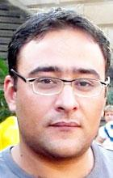

МОСТ - ЭТО ЧАСТЬ ДОРОГИ

латиноамериканский сериал
про азеров - мостостроителей,
или азерский роман
про латиноамериканский сериал
А пока я безуспешно пытался трансформироваться в капиталиста, в надежде на лучшую жизнь, в родном Азербайджане друг-друга сменяли жутко интересные события.
Перечислять эти события и подводить итоги года я не намерен. Во-первых, только мизерная их часть имеет отношение к тематике нашего онлайн-издания – культуре и искусству. А во-вторых, рано пока итоги подводить. Кто знает, какие еще сюрпризы преподнесет нам декабрь месяц?
А так, конечно же, долго можно говорить о всяком, например, об отключении воды во всем городе. Должен предупредить - скоро Баку превратится в фекальную Венецию. Будьте бдительны граждане!
НЕМНОГО КРИТИКИ
С сожалением приходится констатировать тенденцию безнадежной деградации писателей молодого поколения. Альтернативная литература, которая, казалось бы, с каждым днем должна только обогащаться и развиваться, начинает уже надоедать и без того малочисленной читательской публике. Только и доносятся справедливые стоны по поводу застоя на рынке альтернативного чтива. Со скорбью вынужден признать, что так называемая протестная литература идет уже по второму, третьему, и даже четвертому кругу, повторяя заезженные темы. Всеотрицающее уничижение «морально-этических установок» общества, самобичевание и разрушительность – уже не вызывают былого интереса у потребителя.
Думаю, для начала, альтернативной литературе следует избавиться от ярлыка «альтернативности» и переходить на новый этап развития. Позиционирование себя «альтернативным» и «другим», только мешает этой литературе восприниматься в сознании масс как норма (ни в коем случае не предлагаю скатываться до масскульта – авт.). В атмосфере полного отсутствия литературы как таковой, тексты «других» из-за неимения конкурентов, уже не могут и не должны считаться альтернативными. А период, когда было «много протеста, мало литературы» был продиктован необходимостью – молодое поколение писателей-маргиналов только начинало заявлять о себе и провокационные тексты как раздражающее «общественное мнение» средство, действительно являлось эффективным. Сегодня же пора задумываться о качественно новой литературе, истинном вербальном мастерстве, достойным выйти на международный книжный рынок. Пока, к сожалению, в Азербайджане нет ни одного писателя, способного заинтересовать западного читателя.
Хотя, есть и подающие надежды авторы, об одном из которых и пойдет сегодня сказ.
Глоток свежего воздуха в скудной литературной жизни страны, последний и долгожданный роман Сеймура Байджана, повествующий о горькой судьбе мостостроителей, наконец-то увидел свет. Книга так и называется - Мостостроители (Korpusalanlar).
Мосты – пожалуй, самая больная тема для правящей элиты. Малейшая критика возводящихся мостов, которые буквально трещат по швам, выводит наш политистеблишмент из себя. Потрачены (читай отмыты – авт.) миллионы и властям больно не нравится, когда кто-то напоминает им об этом, параллельно указывая на ужасное качество и нефункциональность этих монстров. Точно так же их раздражало злорадство оппозиционной прессы, когда олимпийская лошадка ценою в три миллиона, поскользнулась и грохнулась оземь, опозорив на весь мир нашу древнюю, богатую культуру и нескончаемые нефтяные ресурсы.
***
Роман начинается с пересказа монолога Печорина из «Героя нашего времени». Главный герой произведения Руслан, зачитывает его перед членами экзаменационной комиссии театрального факультета. Как и Печорин, он тоже надеется на эффект своего ораторского мастерства. У Лермонтова, печоринский трогательный монолог оказался великолепным - удар достиг цели и княжна была очарована и поражена. Однако зевающие члены комиссии Сеймура Байджана, просто проигнорировали блестящую, как бы правильнее сказать, интерпретацию Руслана и послали его ко всем чертям.
Руслан сдаваться не намерен. На следующий год, он уже читал монолог Контрабаса, из одноименного романа Патрика Зюскинда. И на этот раз комиссия не оценила должным образом талант молодого человека.
Последняя попытка Руслана - это образ Иван Дмитрича из «Шестой палаты». Но ему опять не удалось впечатлить членов комиссии, именитых актеров, не желающих передавать эстафету молодому поколению.
Поняв, что актерство ему уже не светит, безработный Руслан вмиг оказался на… строительной площадке, примкнув к огромной орде мостостроителей. Мостостроитель - вот она, единственно функциональная и актуальная профессия, в которой любой азербайджанец может сполна реализовать себя, взявшись за строительство абсолютно нефукциональных сооружений.
КАРЛОС + ХУАНИТА: СОЛИДАД x ГОНЗАЛЕС - МАРИЯ = ЛЮБОВЬ
Сеймур великолепно соединил в романе точные архетипичные образы азербайджанцев с латиноамериканскими любимцами миллионов наших граждан. Узнаваемые персонажи Сеймура искусно ложатся в жанр гротеска вперемешку с метафорической публицистикой. «Почему китч, который удобно располагается на телевидении в виде латиноамериканских сериалов, не должен находить своего литературного решения?» справедливо вопрошает автор. Однако в отличие от телевизионной версии латиноамериканских сериалов, рассчитанных на людей низкого уровня и по материальному достатку и по эстетическим потребностям, литературные воплощения этих персонажей получились необыкновенно эффектными – без пафоса, утверждения семейных, религиозных ценностей и самое главное, с мощным ироническим подтекстом. Кстати, Сеймур остался верным традициям сериалов и не стал лишать своих персонажей ограниченных пространств - павильонов и декораций, в которых, как правило снимаются латиноамериканские сериалы. И если абстрагироваться от очевидной, сеймурбайджановской эпатажности, то мы увидим в его произведении, прежде всего бережное отношение к словесности и в то же время нежелание возводить до абсурда серьезное отношение к прозе.
В то время как Сеймур готовится издавать свой четвертый роман-трилогию, в прессе уже пошли ироничные и критические замечания о «Мостостроителях». Для этих людей критика это своеобразный манифест, способ самоутверждения. Этим они прикрывают собственную неспособность к созданию полноценного литературного произведения, которое требует не только наличия таланта, но и высшего напряжения умственной энергии. Хотя ни того, ни другого у них нет наверняка. Их тотальная имитация «постмодернизма» сопряжена с верой в свою исключительность и роль в процессе творения великой литературы. Однако, из-за километров непонятно зачем и для кого написанных пасквилей, у них на это дело, тоже не остается времени.
Так в чем же они обвиняют Сеймура? В несерьезности и легкости жанра? Чушь! Если литература это отражение жизни, то, очевидно, что в ней, как и в самой жизни, должно быть место и войне и болезни, политике и смерти, состраданию и сексу, радости и удовольствию, сериалам и мостостроителям в конце концов. Сегодня молодежь совершает ту же ошибку, что и старики из Союза Писателей, сужая литературу до «серьеза» и отказывая ей в многообразии. Вместо этого, я бы посоветовал им просто собраться, сесть и начать писать. Авось получится.
***
Должна ли современная литература выполнять роль учительницы жизни? Однозначно – нет! Ведь в эпоху тоталитаризма на литературу эту функцию возлагали и соцреализм претендовал на звание единственно реалистичного и политически оправданного жанра. Результат налицо – маразматичный Союз Писателей с целой плеядой никому ненужных шестидесятников, неспособных ни на что.
Никакой морали и нравоучений! «Мостостроители» Сеймура Байджана всего лишь пестрое сосредоточие культурологических кодов, что и позволяет нам отнести этот роман к числу весьма примечательных явлений современной азербайджанской литературы.
Настоятельно рекомендую. Алекпер Алиев
06-12-08
Kultura.Az